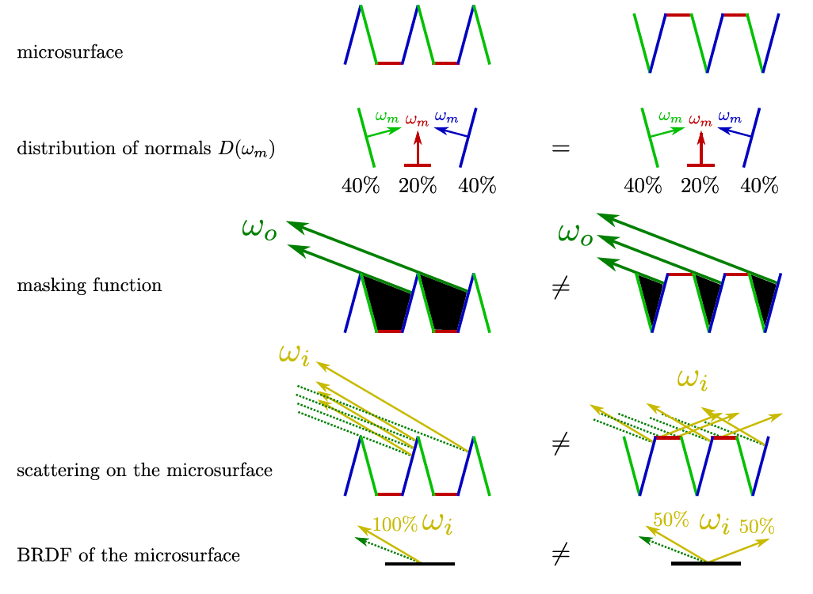

目前的公式渲染似乎出了些奇怪的问题，可以先看我先前做的PPT: [Heitz14]Microfacet Models（密码：1234）。
这个笔记原本是对浅墨PBR白皮书、闫老师GAMES202、Heitz14年的文章的总结，这里推荐一下我当时参考的内容：
[Hetiz14]Understanding the Masking-Shadowing Function in Microfacet-Based BRDF
Heitz14的understanding paper是很好的总结，写的也很浅显易懂，推荐必读。
microfacet模型只是physically based BRDF中的一种，但它也同时是很多后续模型的基础。经过这段时间的学习，我感觉如果要对microfacet模型有了解，那至少需要知道：
- 几种常见法线分布及其特性
- 用于解决shadowing-masking问题的V-cavity或Smith模型
- 基本的形式和推导
- 各自的优点和不足
- 对能量守恒问题的解决
值得注意的是，作为一个physically based BRDF，互易性和能量守恒是很重要的两点，也是贯穿之后很多模型的评价基准。
Microfacet
微表面模型（Microfacet Material）是更接近于物理的材质描述，相比于Lambertian模型、Phong模型，它可以用来描述更复杂的场景。
我们认为广表面（Macrosurface） 是平坦且粗糙的，但是微表面（Microsurface）是凹凸不平但是光滑的（每一个小的面都是光滑平坦的）。粗糙的广表面是由一个个微表面组成，微表面是完美的平面，其朝向不同。
对于微表面模型，整体的光线反射情况应当是所有微表面反射情况的总和。从近处看是几何，从远处看就是一种材质。

广表面的粗糙程度取决于微表面的法线的方差，微表面法线方差越大，广表面越粗糙，表面取向与整个宏观表面取向的偏离更强，反射越模糊，整体越呈现为diffuse的效果。
对于微表面的不同材质，可以考虑通过微表面法线分布进行表示：(Microfacet Cook-Torrance BRDF)
$$
f(i,o)=\frac{F(i,h)G(i,o,h)D(h)}{4(n,i)(n,o)}
$$
其中$$F(i,h)$$即菲涅尔项Fresnel Term，$$G(i,o,h)$$是几何项 Shadowing-masking term，，$$D(h)$$是沿着半程向量的法线分布。
Fresnel Term: F

菲涅尔项告诉了我们不同入射角度的情况下反射的光线的强度，主要表现在grazing angle时光的反射率会增加。

宏观菲涅尔现象的可以理解为微观微平面菲涅尔效应的平均值，这也为Microfacet模型可以呈现出菲涅尔现象提供了理论基础。它也阐释了对于不同材质的微表面模型，菲涅尔现象的强弱也是不一样的，这主要取决于法线分布。
麦克斯韦方程组描述的是折射率变化时光的行为，菲涅尔方程实际上是麦克斯韦方程组的特解。对于不同的材质参数，有不同的反射率：

近似估计
由$F(\omega_o)$ 菲涅尔项进行描述。给定入射光线角度和材质信息，求反射的比例（水面垂直的看通透，斜看如镜子）
我们称入射角为0°时的菲涅尔反射率为$F_0$，按Schlick对F的近似估计： $$ F_0=(\frac{\eta_\lambda-1}{\eta_\lambda+1})^2\ F_{Schlick}=F_0+(1-F_0)(1-cos\theta_d)^5 $$
Normal Distribution Function: D
对于微表面模型，最重要的实际是微表面自身的法线分布NDF（Normal Distribution Function, [1/steradians]）。它在统计上是微观几何表面区域上的微平面表面法线的统计分布；在空间上是法线的密度函数，在微平面法线更可能指向的方向上具有更高的值。
NDF在球面的积分是微平面的面积，其对于某特定视图方向上的投影满足归一化。
对于任何一种材质，我们使用法线分布来描述其材质。如果是光滑glossy的表面，那么法线分布比较集中；否则，法线会分布在四处，呈现出类似diffuse的效果。
在图像上，NDF基本都是$D(m)$以中心为峰值，随着$|\theta_m|$的增大，向外不断衰减。NDF本身是定义在半球面上的，我们希望将它显示在圆上，则按projected solid angle，自上向下俯视观察。
数值约束
在数值上，我们通常将NDF投影到宏观表平面macrosurface上进行讨论，即讨论$D(m)( n\cdot m)$，我们可以注意到一个基于物理的NDF需要满足这些约束：（$\Theta$通常表示球体，$\Omega$表示半球，模型通常在高度场heightfields中考虑）
-
归一化：在球体上的积分为1 $$ \int _{m\in\Theta} D(m)(n\cdot m)dm=1 $$
-
在垂直于任何视图方向v的平面上的投影是相等的（并且数值上为投影面积且S≥0） $$ \int _{m\in\Theta} D( m)( v\cdot m)d m= v \cdot n $$

我们观察到在投影过程中会有很多微表面的正负抵消，实际上我们只需要考察最接近相机的微平面，也即得到下面一个推论（它和这一条是等价的）：
-
可见微平面的投影面积之和等于宏观表面的投影面积
我们定义遮蔽函数$G_1( m, v)$描述沿着视图向量v可见的具有法线m的微平面的比率，则$G_1( m, v)D( m)$是和$D( m)$等价的描述，都表示可见法线的分布，则有： $$ \int _{m\in\Theta} G_1( m, v)D( m)( v\cdot m)^+d m= v \cdot n $$

基本性质
-
法线密度非负（满足统计性质） $$ 0\leq D(m)\leq \infin $$
-
微平面总面积不小于宏观表面总面积 $$ \int_{m\in\Theta}D(m)dm\ge 1 $$
-
任何方向上微观表面投影面积始终与宏观表面投影面积相同（同数值约束2） $$ \int _{m\in\Theta} D( m)( v\cdot m)d m= v \cdot n $$
-
法线方向上的投影积分是归一化的（同数值约束1） $$ \int _{m\in\Theta} D( m)( n\cdot m)d m=1 $$
形状不变性
形状不变性shape invariant 的性质，可以用于推导该函数的各向异性版本和对应Smith G，也方便基于NDF或可见法线分布推导其重要性采样。
具体可见法线分布函数的形状不变性。
一个各向同性NDF，在具有形状不变性时可写作下面两种等价形式： $$ D(m)=\frac{1}{\alpha^2( n\cdot m)^4}g(\frac{\sqrt{1-( n\cdot m)^2}}{\alpha( n\cdot m)})\D\left(\theta_{m}, \alpha\right)=\frac{f\left(\frac{\tan \theta_{m}}{\alpha}\right)}{\alpha^{2} \cos ^{4} \theta_{m}} $$ 其中$g()$是表示NDF形状的一维函数
各向同性的法线分布模型
有不同的模型可以描述这样的分布，可以写作一个法线方向$h$ 的函数。
对于各向同性NDF，按照时间排序有：
- Berry [1923]
- Beckmann [1963]
- Phong [1973]
- Blinn-Phong [1977]
- ABC [1989]
- GGX [2007] / Trowbridge-Reitz [1975]
- Shifted Gamma Distribution，SGD [2012]
- Trowbridge-Reitz（GTR）[2012]
- Student’s T-Distribution , STD [2017]
- Exponential Power Distribution , EPD [2017]
整体的发展趋势是，更新的模型在能量守恒的基础上，具有更真实的外观表现、更宽的尾部、更高峰值的GGX分布，并且倾向于具有多高光波瓣multiple specular lobes。比较重要的如Beckmann、GGX等模型。
-
Blinn-Phong NDF
Feature:
-
对于Phong模型在微表面BRDF结构上的改进
-
shape-invariant 形状不变性
主流的Normalized Blinn-Phong形式： $$ D_p( m)=\frac{\alpha_p+2}{2\pi}( n\cdot m)^{\alpha_p} $$
- 参数$\alpha_p$是粗糙度参数，越高值越光滑，艺术家操作的值是通常加以映射的 $\alpha_p=\infin$时表示完美的镜面，$\alpha_p=0$时实现最大随机曲面；
-
-
Beckmann NDF
Feature:
-
shape-invariant 形状不变性（？）
-
类似于Gaussian高斯函数： $$ f(x)=\frac{1}{\sigma\sqrt{2\pi}}e^{-\frac{x-\mu}{2\sigma^2}} $$
它定义在坡度空间Slope Space上（使用$\tan\theta_h$，体现为在单位半球上的每一个切平面上相交的点。它保证微表面的面不会朝下）： $$ D(h)=\frac{1}{\pi\alpha^2cos^4\theta_h}e^{-\frac{tan^2\theta_h}{\alpha^2}} $$ 类比于高斯函数中$\sigma$ 控制函数的“胖瘦”（标准差），这里的$\alpha$起到了相同的作用，$\alpha$描述法线的粗糙程度，粗糙程度越小效果越接近镜面反射。
$\theta_h$则是半程向量$h$和法线$n$的夹角。也由此可知，这个形式的Beckmann函数表示的是各向同性的结果。
其中，$\frac{1}{\pi\alpha^2cos^4\theta_h}$保证了归一化，也即它在projected solid angle上积分为1。（为什么？）
-
-
GGX/Trowbridge-Reitz NDF
Feature:
- shape-invariant 形状不变性
- 相比于Beckmann，函数图像的突出特征在于其“长尾巴 long tail”，它相较于Beckmann在后期衰减的更慢，会呈现出“光晕”的效果，高光更加柔和。
 $$
D_{GGX}( m)=\frac{\alpha^2}{\pi(( n\cdot m)^2(\alpha^2-1)+1)^2}
$$
$$
D_{GGX}( m)=\frac{\alpha^2}{\pi(( n\cdot m)^2(\alpha^2-1)+1)^2}
$$
-
GTR (Generalized Trowbridge-Reitz) NDF
Feature:
-
Extending GGX: longer tail “更长的尾巴”
GTR模型使得long tail的幅度是可控的，当其中参数$\gamma=2$时它是标准的GGX模型，$\gamma$是可控的。
-
没有形状不变性
$$ D_{GTR}( m)=\frac{c}{(1+( n\cdot m)^2(\alpha^2-1))^\gamma} $$
γ用于控制尾部形状。 随着γ的值减小，分布的尾部变得更长。而随着γ值的增加，分布的尾部变得更短。
- γ=1时，GTR即Berry分布
- γ=2时，GTR即GGX（Trowbridge-Reitz）分布

-
各向异性的法线分布模型
模型创建方法：基于现有NDF进行推导（可用于任何shape-invariant各向同性NDF）
对于一个shape-invarient isotropic NDF： $$ D(\mathbf{m})=\frac{1}{\alpha^{2}(\mathbf{n} \cdot \mathbf{m})^{4}} g\left(\frac{\sqrt{1-(\mathbf{n} \cdot \mathbf{m})^{2}}}{\alpha(\mathbf{n} \cdot \mathbf{m})}\right) $$ 我们可以得到相对应的anisotropic NDF: $$ D(\mathbf{m})=\frac{1}{\alpha_{x} \alpha_{y}(\mathbf{n} \cdot \mathbf{m})^{4}} g\left(\frac{\sqrt{\frac{(\mathbf{t} \cdot \mathbf{m})^{2}}{\alpha_{x}^{2}}+\frac{(\mathbf{b} \cdot \mathbf{m})^{2}}{\alpha_{y}^{2}}}}{(\mathbf{n} \cdot \mathbf{m})}\right) $$ 参数αx和αy分别表示沿切线（tangent）方向t和副法线（binormal）方向b的粗糙度。若αx = αy，则上式缩减回各向同性形式。
多高光波瓣
multiple specular lobes的目的在于更好的匹配测量材质的高光表现。它常与Layered mixture model相结合。
主流NDF的局限：
-
缺少shape invariance + shape control
-
无法表示粗粒度

-
建模的局限：即Cook-Torrance microfacet BRDF的局限
- 没有考虑多次散射
- 没有考虑衍射
- 也没有考虑波动光学
- 其假设所有遮挡的光线都被丢失，会导致与现实行为相比的能量损失。
Shadow-Masking Term: G
它处理的是自遮挡的问题，尤其在grazing-angle的情况下，它是极为重要的。由于NDF模型是从统计形式转换而来的，我们无法从统计的角度考虑masking问题，所以引入了Shadow-Masking项。
这样的遮挡可以视为两个问题：从光线入射方向的面元遮挡造成的Shadowing，和从观察方向的面元遮挡造成的Masking。它们造成的问题是统一的：如果不考虑遮挡问题，菲涅尔项的影响下，grazing-angle的情况下将会观察到极亮的情况。
从这个角度上而言，它对BRDF的形状影响不大，但它是BRDF能保持能量守恒的关键。
它的最终结果是找到对BRDF有贡献的区域，忽略掉被Shadowing和Masking的区域。
值得注意的是，Shadowing和Masking的区域在实际物理中仍是对最终结果有贡献的，它们不会接收到直射光但会接收到光的多重bounce。不过在主流的Microfacet模型当中，我们不考虑这一点，其造成的能量不守恒问题交由Kulla-Conty方法进行近似。

过往的几何函数建模工作：
- Smith [1967] [Physically Based]
- V-cavity（Cook-Torrance）[1982] [Physically Based]
- Schlick-Smith [1994]
- Neumann [1999]
- Kelemen [2001]
- Implicit [2010]
我们常使用Smith shadowing-masking term，它考虑从法线分布的统计学分布推出shadowing-masking项。并且将shadowing和masking分开考虑，提出了假设$G(i,o,m)\approx G_1(i,m)G_1(o,m)$。($m$即half-vector)
在函数图像上，$G_1$类似于尺度变换后的门函数，在垂直观察的情形下是基本不会产生作用的。
Eric Heitz在2014年[Heitz 2014]将其拓展为Smith联合遮蔽阴影函数（Smith Joint Masking-Shadowing Function），该函数具有四种形式：
- 分离遮蔽阴影型（Separable Masking and Shadowing）
- 高度相关遮蔽阴影型（Height-Correlated Masking and Shadowing）
- 方向相关遮蔽阴影型（Direction-Correlated Masking and Shadowing）
- 高度-方向相关遮蔽阴影型（Height-Direction-Correlated Masking and Shadowing）
其中，高度相关遮蔽阴影型（Height-Correlated Masking and Shadowing），以及其近似，是目前业界采用的主流遮蔽阴影函数。
基本性质
-
标量性 $$ 0\leq G(i,o,m)\leq1 $$
-
对称性 $$ G(i,o,m)=G(o,i,m) $$
-
同向可见性 $$ \begin{aligned} G(\mathbf{l}, \mathbf{v}, \mathbf{m})=0 & \text { if }(\mathbf{l} \cdot \mathbf{m})(\mathbf{l} \cdot \mathbf{n}) \leq 0 \ & \text { or }(\mathbf{v} \cdot \mathbf{m})(\mathbf{v} \cdot \mathbf{n}) \leq 0 \end{aligned} $$
-
拉伸不变性 Stretch Invariance
在一个维度上乘以常数因子，不会更改微表面轮廓的拓扑结构。遮挡的光线仍会被遮挡，未遮挡的光线仍未被遮挡。

形式与推导
基本形式
按$G(i,o,m)\approx G_1(i,m)G_1(o,m)$，几何函数具有两种主要形式。
$G_1$：单方向可见比例，即光照方向/观察方向上的可见比例
$G$：双向可见比例

基本约束
我们首先需要找到一个$G_1( m, v)$，这个$G_1( m, v)$需要满足两个约束：
-
满足微表面法线表示
按球面积分： $$ \int _{m\in\Theta} G_1( m, v)D( m)( v\cdot m)^+d m= v \cdot n $$ 我们可以得到对$G_1( m, v)$的第一个约束。我们可以找到无限个$G_1$满足这样的约束。
-
满足合适的微表面轮廓
左图：真实世界连续微表面；右图：Smith模型

图：V-cavity scattering mode [该模型不是对一个微表面上的散射进行建模，而是计算单独微表面上的散射并混合结果]
Smith模型
Smith遮蔽函数是唯一既遵循公式，又具有法线遮蔽独立性（normal-masking independence）便利特性的函数，对比V-cavity scateering mode 可以更好匹配真实世界的反射现象：

基本形式：（$\chi^+(\mathrm{x}) $ 表示正特征函数） $$ G_{1}(\mathbf{m}, \mathbf{v})=\frac{\chi^{+}(\mathbf{m} \cdot \mathbf{v})}{1+\Lambda(\mathbf{v})}\ \chi^{+}(x)=\left{\begin{array}{ll} 1, & \text { where } x>0 \ 0, & \text { where } x \leq 0 \end{array}\right. $$ 广义形式： $$ \frac{1}{1+\Lambda(\mathbf{v})}\ $$ 其中$\Lambda(\mathbf{v})$表示微表面斜率上的积分（integral over the slopes of the microsurface）： $$ \Lambda(\mathbf{v})=\frac{1}{\cot \theta_{o}} \int_{\cot \theta_{o}}^{\infty}\left(x_{\tilde{m}}-\cot \theta_{o}\right) P^{2-}\left(x_{\tilde{m}}\right) d x_{\tilde{m}}\ $$ 每个法线分布函数会导出不同的$\Lambda(\mathbf{v})$函数，但有且只有具有形状不变性的法线分布函数可以导出解析形式的$\Lambda(\mathbf{v})$。
对于积分中涉及的其它参数：
对于视图方向上斜率的1D分布： $$ P^{2-}\left(x_{\tilde{m}}\right)=\int_{-\infty}^{+\infty} P^{22}\left(x_{\tilde{m}}, y_{\tilde{m}}\right) d y_{\tilde{m}} $$ 其中$P^{22}\left(x_{\tilde{m}}, y_{\tilde{m}}\right)$是微表面的斜率分布，而 $ \tilde{m} $ 为与法线 $ m=\left(x_{m}, y_{m}, z_{m}\right)$相关的斜率:： $$ m
\tilde{m}=\left(x_{\tilde{m}}, y_{\tilde{m}}\right)=\left(-\frac{x_{m}}{z_{m}},-\frac{y_{m}}{z_{m}}\right)=-\tan \theta_{m}\left(\cos \phi_{m}, \sin \phi_{m}\right) $$ 斜率的分布必然是标准化的: $$ \int_{-\infty}^{\infty} \int_{-\infty}^{\infty} P^{22}\left(x_{\tilde{m}}, y_{\tilde{m}}\right) d x_{\tilde{m}} d y_{\tilde{m}}=1 $$ 且斜率分布与法线分布的关系为: $$ D(\mathbf{m})=\frac{P^{22}\left(x_{\tilde{m}}, y_{\tilde{m}}\right)}{\cos ^{4} \theta_{m}} $$
前面我们认识到，Smith函数假设了这样一个近似：$G(i,o,m)\approx G_1(i,m)G_1(o,m)$
它同时具有以下性质：
-
法线/遮蔽独立（Normal/Masking Independence） （由于Smith微表面轮廓假设微曲面不是自相关的（autocorrelated））
-
对非随机表面与重复或结构化图案（例如布料（fabric））的相关性的影响可能非常显著 故不建议使用于相关情景
Extending Smith模型
业界尝试用Smith Joint Masking-Shadowing Function代替$G_1$，它具有四种形式
- 分离的遮蔽阴影型（Separable Masking and Shadowing）
- 高度相关的遮蔽阴影型（Height-Correlated Masking and Shadowing）
- 方向相关的遮蔽阴影型（Direction-Correlated Masking and Shadowing）
- 高度-方向相关遮蔽阴影型（Height-Direction-Correlated Masking and Shadowing）
对于不同的情况，它们主要处理的是Shadowing和Masking相关性的问题。
-
分离的遮蔽阴影函数（Separable Masking and Shadowing Function）
最简单和最广泛使用的变体，提出了这样的关系： $$ G(i,o,m)= G_1(i,m)G_1(o,m)=\frac{\chi^{+}(\mathbf{m} \cdot \mathbf{i})}{1+\Lambda(\mathbf{i})}\frac{\chi^{+}(\mathbf{m} \cdot \mathbf{l})}{1+\Lambda(\mathbf{o})} $$ 分开计算使得并不模拟遮蔽和阴影的相关性，但一些相关性仍是存在的，所以会多估算出阴影
-
高度相关的遮蔽阴影函数（Height-Correlated Masking and Shadowing Function）
对shadowing和masking的相关性进行了模拟：microfacet在microsurface内升高得越多，对于出射方向未被unmasked和入射方向未被unshadowed的可见概率越大。
但在出射方向和入射方向接近时，会估算出更多的阴影。 $$ G_{2}(\mathbf{v}, \mathbf{l}, \mathbf{m})=\frac{\chi^{+}(\mathbf{v} \cdot \mathbf{m}) \chi^{+}(\mathbf{l} \cdot \mathbf{m})}{1+\Lambda(\mathbf{v})+\Lambda(\mathbf{l})} $$
-
方向相关的遮蔽阴影函数（Direction-Correlated Masking and Shadowing Function)
note that this function should compute shadowing term and masking term seperately as we can not find the analytic form of Smith. $$ \begin{array}{l} G_{2}(\mathbf{v}, \mathbf{l}, \mathbf{m}) \ =\lambda(\phi) G_{1}(\mathbf{v}, \mathbf{m}) G_{1}(\mathbf{l}, \mathbf{m})+(1-\lambda(\phi)) \min \left(G_{1}(\mathbf{v}, \mathbf{m}), G_{1}(\mathbf{l}, \mathbf{m})\right) \end{array} $$
-
高度方向相关的遮蔽阴影函数（Height-Direction-Correlated Masking and Shadowing Function）
对于方向相关，通过将方向相关因子λ纳入高度相关形式来进行建模 $$ G_{2}(\mathbf{v}, \mathbf{l}, \mathbf{m})=\frac{\chi^{+}(\mathbf{v} \cdot \mathbf{m}) \chi^{+}(\mathbf{l} \cdot \mathbf{m})}{1+\max (\Lambda(\mathbf{v}), \Lambda(\mathbf{l}))+\lambda(\mathbf{v}, \mathbf{l}) \min (\Lambda(\mathbf{v}), \Lambda(\mathbf{l}))} $$ 出射方向和入射方向重合时$\lambda=0$，shadowing和masking完全相关；方向角度越大，相关因子越大，相关性越小。
随着$\lambda=1$，shadowing和masking不再是方向相关，公式退化为完全Height-Correlated形式。
相关因子可以选取为这样的经验因子[Ginneken 1998]： $$ \lambda=\frac{4.41\phi}{4.41\phi+1} $$ Heitz的工作[Heitz 2014]对$\lambda(v,l)$进行了解析近似。
主流NDF的导出函数
- Beckmann
- Blinn-Phong
- GGX
能量损失问题
在基本的模型基础上，我们也需要讨论微表面模型的能量损失问题。
引入了shadowing-masking term以后，我们会遇到能量损失的问题。在不同的roughness下，会有不同的能量损失。在rough时会损失更多能量。越粗糙的表面，在表面多次弹射的可能性越大，也就会有更多的能量损失。
在离线渲染领域的解决方案是在微表面上实现真正的多次弹射（interreflection）[Heitz rt al. 2016]。
在实时渲染则采用Kulla-Conty近似 进行弥补能量，其核心思路在于“被遮挡则会发生下次弹射”。它通过经验性的方式补全多次反射丢失的能量
多重散射模型 [Offline]
Heitz在[Heitz 2016]中深入讨论了多重散射微平面BRDF（Multiple-scattering microfacet BRDF），介绍了多尺度BRDF的随机计算
Kulla-Conty近似 [Real-time]
Sony ImageWork的Kulla和Conty[Kulla 2017]在SIGGRPAPH 2017上中提出了一项新的技术方案，创建一个模拟多次反射表面反射的附加BRDF波瓣，作为能量补偿项（Energy Compensation Term）： $$ f_{m s}(\mathbf{l}, \mathbf{v})=\frac{\bar{F} \overline{R_{s F 1}}}{\pi\left(1-\overline{R_{s F 1}}\right)\left(1-\bar{F}\left(1-\overline{R_{s F 1}}\right)\right)}\left(1-R_{s F 1}(\mathbf{l})\right)\left(1-R_{s F 1}(\mathbf{v})\right) $$
推导过程
我们首先计算弹射出的总能量： $$ E(\mu_o)=\int^{2\pi}0\int^1_0f(\mu_o,\mu_i,\phi)\mu_id\mu_id\phi,;;\mu=sin\theta $$ 对于某种BRDF，我们只需补上$1-E(\mu_o)$的能量即可。也即我们补上另外一种BRDF使其积分出来的能量等于$1-E(\mu_o)$。同时我们需要考虑其对称性（它应该是可逆的，BRDF遵从互反律），也即它的形式有： $$ c(1-E(\mu_i))(1-E(\mu_o)) $$ 其中$c$是用于归一化的量： $$ f{ms}(\mu_o,\mu_i)=\frac{(1-E(\mu_o))(1-E(\mu_i))}{\pi(1-E_{avg})},;;E_{avg}=2\int^1_0E(\mu)\mu d\mu $$ 代入可验证。
此时$E_{avg}(\mu_o)=2\int^1_0E(\mu_i)\mu_id\mu_i$仍旧是未知的，为了减少计算成本，我们可以预计算/打表。
$E_{avg}$仅依赖于参数$\mu_o$和roughness，我们可以对这两个数算出所有的组合（一张二维表）。
考虑到颜色的Kulla-Conty
如果原本的BRDF有颜色，颜色意味着物体吸收了某些光，也就意味着它发生了应该发生的能量损失，这是额外的。我们仍是只需要计算总体能量。
我们仍旧可以先考虑没有颜色的情况，再考虑颜色造成的能量损失
我们定义一个平均分的Frensel项分量，用于表示平均每次反射过程中有多少能量会被反射： $$ F_{avg}=\frac{\int^1_0F(\mu)\mu d\mu}{\int^1_0\mu d\mu}=2\int^1_0F(\mu)\mu d\mu $$ $1-F_{avg}$表示被吸收的能量，$1-E_{avg}$表示没反射出去的能量（可再次参加反射）。
这些能量是不会参与到多次的bounce当中，也即$1-E_{avg}$才是会参与到后面多次的反射过程当中。
我们可以注意到：
-
我们可以直接看到的能量是$F_{avg}E_{avg}$。
-
再一次反射后即$F_{avg}(1-E_{avg})\cdot F_{avg}E_{avg}$；
-
第$k$次反射后即$F^k_{avg}(1-E_{avg})^k\cdot F_{avg}E_{avg}$，
将所有可能的能量相加则有级数（$k\to\infin$）： $$ \frac{F_{avg}E_{avg}}{1-F_{avg}(1-E_{avg})} $$ 即颜色项Color Term，我们可以直接将其乘在BRDF上。可以狭义地理解为金属的反射系数。
参考资料
基于物理的渲染（PBR）白皮书 | PBR White Paper
understanding Paper
Derivation of the Masking Function
Radiance: the energy density traveling through an area from a solid angle
对于任意的表面，表面在给定方向的Radiance是每个点在该方向的radiance的积分，即$L(\omega_o,M)=\int L(\omega_o,p_m)$，也可理解为是表面在出射方向投影的投影面积的加权平均： $$ L(\omega_0,M)=\frac{\int_M A_{projected}\cdot L(\omega_o,p_m)dp_m}{\int_MA_{projected}, dp_m} $$ 其中$A_{projected}$是投影区域；分母是归一化系数，确保权重之和为1。
在Microfacet框架中，几何衰减因子也即对应此处的分母，是能量保存所需的归一化项。
我们定义$\omega_g$是几何体$\mathcal{G}$的法线；$\omega_m(p_m)$是微表面$\mathcal{M}$上每个点$p_m$的法向量，它是从微表面上一点到该点表面法向量的函数$\omega_m(p_m):M\to G$，表示为$\omega_m=(x_m,y_m,z_m)$。
空间描述与统计描述
微表面模型是一个统计模型，我们常通过统计方程对其进行描述，其定义于法线空间即球面域$\Omega$中。为将空间描述与统计描述结合起来，我们引入了NDF的概念。
Normal Distribution Function, NDF $[m^2/sr]$： $$ D(\omega)=\int_M\delta_\omega\omega_mdp_m $$
法线分布的积分就是微平面的面积： $$ A_{microsurface}=\int_Mdp_m=\int_\Omega D(\omega_m)d\omega_m $$
在这里，法线分布的积分是法线分布函数对于射到Gauss球面上的每一个微表面法向量的积分，它同时也相当于微表面每个点在微表面的积分，也即微表面的面积。
我们现在需要探讨空间积分和统计积分的关系，为此两者的转换搭建起一座桥梁。我们设$f(\omega_m)$可以是微表面法线的任何函数，我们可以将$f$的空间积分用统计积分进行代替： $$ \int_{\mathcal{M}} f\left(\omega_{m}\left(p_{m}\right)\right) d p_{m}=\int_{\Omega} f\left(\omega_{m}\right) D\left(\omega_{m}\right) d \omega_{m} $$ 假设我们现在有一个定义在microsurface的spatial function:$g(p_m)$，那么对应的，我们可以定义一个与其对应的统计函数$g(\omega_m)$： $$ g(\omega)=\frac{\int_{\mathcal{M}} \delta_{\omega}\left(\omega_{m}\left(p_{m}\right)\right) g\left(p_{m}\right) d p_{m}}{\int_{\mathcal{M}} \delta_{\omega}\left(\omega_{m}\left(p_{m}\right)\right) d p_{m}} $$ 我们可以找到这样的关系： $$ \int_{\mathcal{M}} g\left(p_{m}\right) d p_{m}=\int_{\Omega} g\left(\omega_{m}\right) D\left(\omega_{m}\right) d \omega_{m} $$
微表面投影
-
microsurface在几何法线上的投影就是几何表面的面积
我们可以分别从空间描述和统计描述的角度进行考虑： $$ \int_{\mathcal{M}}\left(\omega_{m}\left(p_{m}\right) \cdot \omega_{g}\right) d p_{m}=\int_{\mathcal{G}} d p_{g}=1 \ \int_{\Omega}\left(\omega_{m} \cdot \omega_{g}\right) D\left(\omega_{m}\right) d \omega_{m}=1 $$
-
几何表面在出射方向$\omega_o$的投影面积 $$ \text { projected area }=\left(\omega_{o} \cdot \omega_{g}\right) . \text { area }=\cos \theta_{o} \cdot 1 \mathrm{~m}^{2} $$
-
可见表平面(visible microsurface)在出射方向$\omega_o$的投影面积等于几何表面的投影面积 $$ \text { projected area }=\int_{\mathcal{M}} G_{1}\left(\omega_{o}, p_{m}\right)\left\langle\omega_{o}, \omega_{m}\left(p_{m}\right)\right\rangle d p_{m}=\int_{\Omega} G_{1}\left(\omega_{o}, \omega_{m}\right)\left\langle\omega_{o}, \omega_{m}\right\rangle D\left(\omega_{m}\right) d \omega_{m} . $$ 其中statistical masking function $G_1(\omega_o,\omega_m)\in[0,1]$,它是微表面法线$\omega_m$中沿着出射方向$\omega_o$可见的比例: $$ G_{1}\left(\omega_{o}, \omega\right)=\frac{\int_{\mathcal{M}} \delta_{\omega}\left(\omega_{m}\left(p_{m}\right)\right) G_{1}\left(\omega_{o}, p_{m}\right) d p_{m}}{\int_{\mathcal{M}} \delta_{\omega}\left(\omega_{m}\left(p_{m}\right)\right) d p_{m}} $$
对Masking Function的限制
Masking函数的约束
我们在上面得知了关于microfacet的一个特性:可见表平面(visible microsurface)在出射方向$\omega_o$的投影面积等于几何表面的投影,我们则可由此确定一个约束: $$ \cos \theta_{o}=\int_{\Omega} G_{1}\left(\omega_{o}, \omega_{m}\right)\left\langle\omega_{o}, \omega_{m}\right\rangle D\left(\omega_{m}\right) d \omega_{m} $$
Normal/Masking独立
$G_1$和法线$\omega_n$是相互独立的，这种独立性使得我们可以分离积分中的法线部分：
Masking Function的积分形式
Smith Masking Shadowing Function
Smith